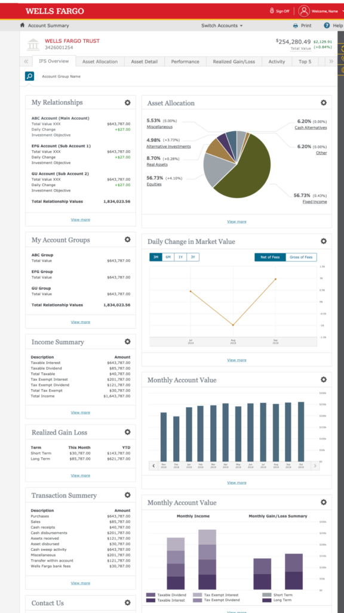
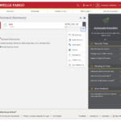
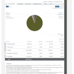
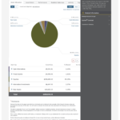

Wealth Management · Wells Fargo
IFS Dashboard: a personalized workspace for Relationship Managers and Ultra High Net Worth clients
The challenge
Relationship Managers and ultra-high-net-worth clients needed a single view into investment portfolios that were otherwise scattered across disconnected tools and reports. As part of Wells Fargo's Investment Fiduciary Services redesign, I led the UX strategy and design for a dashboard that could flex to how each Relationship Manager and client actually worked.

Full IFS Dashboard view: relationship, allocation, and performance tiles arranged in a personalized, rearrangeable layout.
The approach
I designed a workspace that let users aggregate key account information in one place, rearrange dashboard tiles through drag-and-drop, and tailor each view to a selected account group. It was one of the first highly personalized dashboard experiences built within Wells Fargo, which meant establishing new interaction patterns rather than adapting existing ones.



A more intuitive, flexible, customer-centered experience that changed how clients monitored and managed their investments.
Why it mattered
Personalization at this level was new territory for a wealth management platform of this scale. The dashboard gave both RMs and clients control over what they saw and how, replacing a one-size-fits-all report view with a workspace people could actually shape around their own priorities.